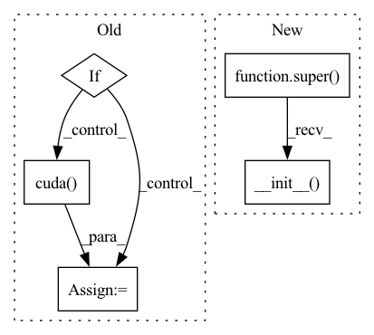

Pattern ID :9160
Before Change
Raises:
None
if cuda:
self._model = model.cuda()
else:
self._model = model.cpu()
self._buff = ravel_model_params(model, cuda=cuda)After Change
None
def __init__(self, model, data_loader, optimizer=None, criterion=None, cuda=False):
super(self, ClientSGDHandler).__init__( model, cuda)
//self._buff = ravel_model_params(model, cuda=cuda)
self._data_loader = data_loaderIn pattern: SUPERPATTERN
Frequency: 3
Non-data size: 5
Instances Fragment ID: 33262715
Project Name: smilelab-fl/fedlab
Commit Name: a0819887f5d5b02648955d89342b7a165ae093ef
Time: 2021-03-18
Author: 928255708@qq.com
File Name: fedlab_core/client/handler.py
M Class Name: ClientSGDHandler
N Class Name: ClientSGDHandler
M Method Name: __init__(6)
N Method Name: __init__(7)
M Parent Class: ClientBackendHandler
N Parent Class: ClientBackendHandler
M File Name: fedlab_core/client/handler.py
N File Name: fedlab_core/client/handler.py
M Start Line: 41
M End Line: 78
N Start Line: 63
N End Line: 63
Before Change
def __init__(self, fname, gpu):
self.gpu = gpu
self.model = PretrainedDeCoAR2Model(fname).cuda(gpu)
if self.gpu is not None:
self.model = self.model.cuda( gpu)
def __call__(self, x):
x = torch.from_numpy(x).float()
if self.gpu is not None:After Change
dropout: a float indicating the RNN dropout rate.
residual: a bool indicating whether to apply residual connections.
super(DeCoAR2, self).__init__()
config = Config()
for arg_name, arg_val in args.items():
setattr(config, arg_name, arg_val)
Fragment ID: 33262714
Project Name: awslabs/speech-representations
Commit Name: 33419e6629432e01652d28f457cbbc58f007c012
Time: 2021-06-17
Author: shaosl@38f9d361834b.ant.amazon.com
File Name: src/speech_reps/models/decoar2.py
M Class Name: DeCoAR2
N Class Name: DeCoAR2
M Method Name: __init__(1)
N Method Name: __init__(3)
M Parent Class: nn.Module
N Parent Class:
M File Name: src/speech_reps/models/decoar2.py
N File Name: src/speech_reps/models/decoar2.py
M Start Line: 44
M End Line: 50
N Start Line: 29
N End Line: 44
Before Change
self.Kr = np.sqrt(self.K)
self.LAMBDA = 2 * self.Kr * gamma * 2
if self.use_cuda:
self.G = nn.DataParallel(self.G.cuda() )
self.D = nn.DataParallel(self.D.cuda())
self.c, self.A, self.pStart = self._prepare_linear_programming_solver_(self.batch_size)After Change
class VarianceDiscriminator(torch.nn.Module):
def __init__(self, data_dim, gamma=0.1, K=-1):
super().__init__()
parameters = {
"betas" : [0.5, 0.999],
"z_dim" : 32,
"size" : 16, Fragment ID: 33262713
Project Name: digitalphonetics/ims-toucan
Commit Name: bf64e87259d9369d5ec32e4c524995cd7b284f15
Time: 2023-03-01
Author: lux.florian@gmail.com
File Name: TrainingInterfaces/Text_to_Spectrogram/ToucanTTS/VarianceDiscriminator.py
M Class Name: VarianceDiscriminator
N Class Name: VarianceDiscriminator
M Method Name: __init__(4)
N Method Name: __init__(6)
M Parent Class: torch.nn.Module
N Parent Class:
M File Name: TrainingInterfaces/Text_to_Spectrogram/ToucanTTS/VarianceDiscriminator.py
N File Name: TrainingInterfaces/Text_to_Spectrogram/ToucanTTS/VarianceDiscriminator.py
M Start Line: 19
M End Line: 71
N Start Line: 26
N End Line: 74